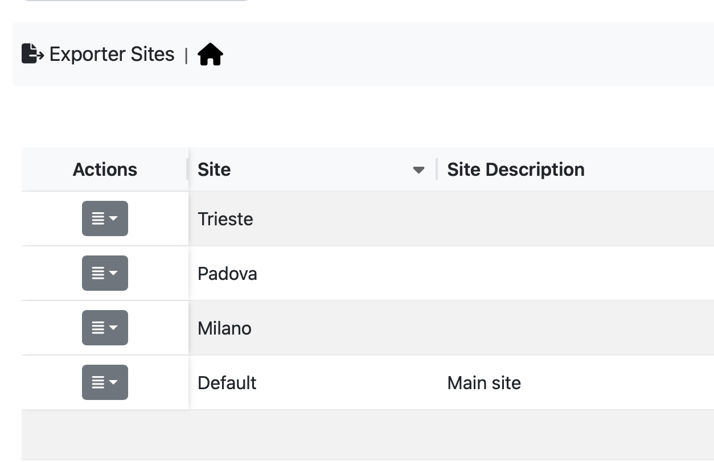

Экспортеры потоков
Экспортер потока — это любое сетевое устройство или программное обеспечение, которое генерирует и отправляет данные о потоке сборщику. По сути, это источник информации о потоках при мониторинге сети.
Ключевые характеристики экспортеров включают в себя:
Создание потока: проверяет пакеты и группирует их в потоки на основе 5-кортежей (IP-адрес источника, IP-адрес назначения, порт источника, порт назначения, протокол).
Агрегация статистики: подсчитывает байты, пакеты, отслеживает флаги TCP, временные метки.
Поддержка протокола: экспорт в определенном формате потока (NetFlow v5/v9, IPFIX, sFlow)
Настраиваемый экспорт: IP-адрес/порт назначения, частота дискретизации, частота обновления шаблона.

На приведенном выше рисунке
Все экспортеры отправляют товар в nProbe, а не напрямую в ntopng.
nProbe становится единственным экспортером с точки зрения ntopng
ntopng видит потоки, исходящие с IP-адреса nProbe (например, 127.0.0.1)
Управление происходит на уровне nProbe:
Настройте экспортеры для отправки на IP:порт nProbe
nProbe занимается трансляцией протоколов, балансировкой нагрузки
Экспортеры «скрыты» от ntopng
Экспортеры в ntopng
Доступ к экспортерам потоков осуществляется из меню на левой боковой панели. Расход Эксп. раздел:

Экспортеры перечислены в экземпляре nProbe, из которого собираются потоки. Вы можете прочитать статистику о собранных потоках, дропах и активной лицензии.
Сайты
В крупных сетях вы можете определить сайты, на которых активны экспортеры, и сгруппировать их по местоположению.

Сайты можно настроить из приведенного выше меню, и вы указываете их местоположение в пункте меню конфигурации.

О сайтах-экспортерах сообщается на различных страницах ntopng, таких как страница потока в реальном времени или панель мониторинга. Если вы включили исторические потоки, вы можете искать потоки по сайту.
Использование полосы пропускания для каждого приложения интерфейсов экспортера описано в разделе Интерфейсы экспортера. Использование полосы пропускания на приложение..